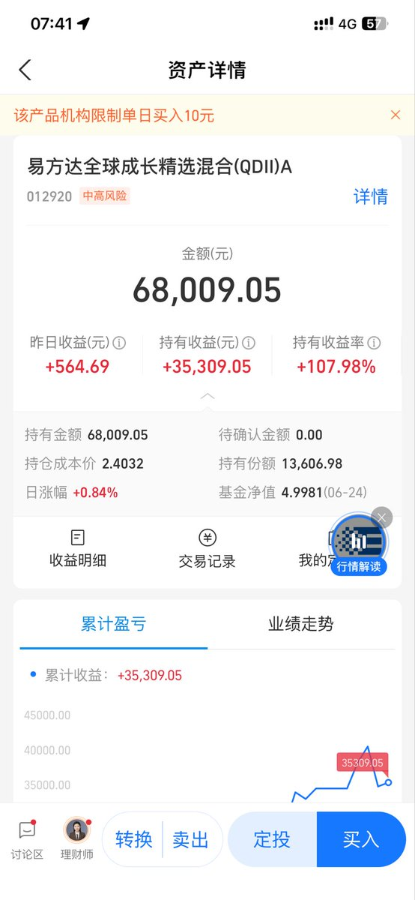
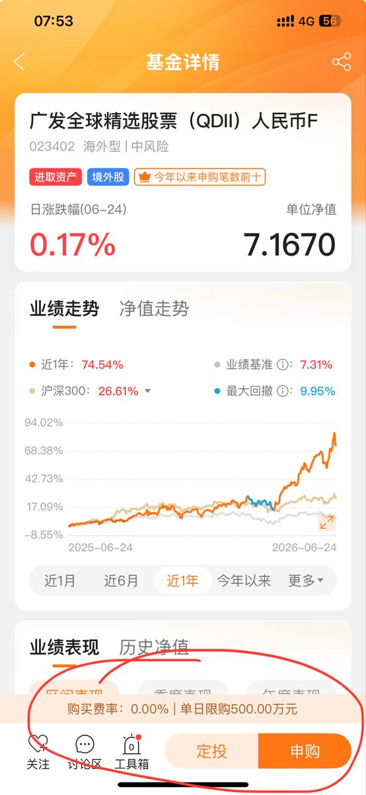
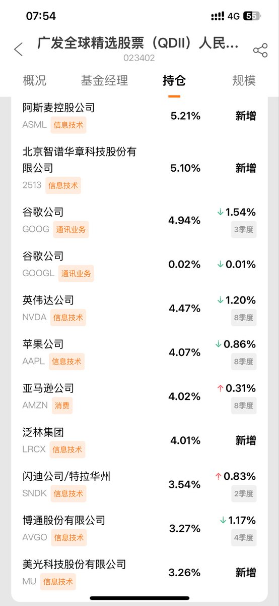

寒涟漪
@HANLIANYI331
@qtdevlop 这个费用太贵了，达到每年1.4％，这个费用可不会因为亏损而少收
支付宝上最便宜的纳斯达克100的基金每年的费用是0.6％，足足0.8％的差距
时间久了对复利的侵吞会非常明显



中年码农程序员
@qtdevlop
纳斯达克信徒们，一个重要信息差：
易方达全球成长精选混合（QDII）目前稳坐第一主动QDII基金的位置，基金经理能力很强。
但它一直限购**10块钱**，基本等于暂停申购了……
想曲线救国的话，可以换现在不限购的：
**广发全球精选股票(QDII)F**
每日限购500万，渠道合适的话能买到。 https://t.co/O8L2d1l6MV